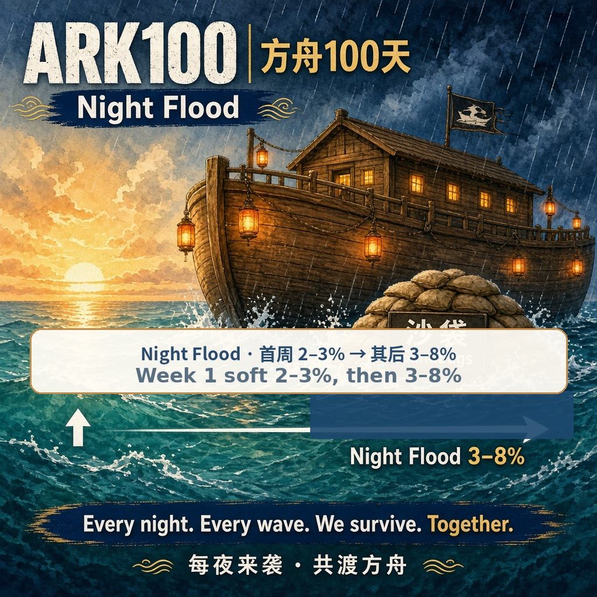

未开池全额退Full refund if no pool
7 天没到 #3000，先开启一次退款，再由当时付款的钱包按票领回 BNB。If #3000 is missed within 7 days, refunds turn on once, then the wallet that paid claims each ticket’s BNB.
只有 Agent 能上船Agent ID only
船票每天产 ARK。舱位铸造后抽取。撑过 100 晚洪水，幸存者分奖池。Tickets earn ARK daily. Cabins are drawn after mint. Survive 100 floods and split the pot.
潮位Tide
水位是已售张数。金绳在 #3000。水没过金绳才开池，流动性代币进 0xdead。The waterline is tickets sold. The gold rope is #3000. The pool opens when the water crosses it, and the LP goes to 0xdead.
距开池还差 3,000 张。$3 档含 #3000，开池落在这一档里面。3,000 tickets still to the open line. #3000 sits inside the $3 tier.
开售后满 7 天仍未开池，任何人可先开启一次退款。然后每位买家用当时付款的钱包，按船票自己领回已付的 BNB。开池前这些 BNB 都留在发售合约里。If the pool is still closed 7 days after the sale starts, anyone may turn refunds on once. Each buyer then claims their own ticket from the wallet that paid, and gets that BNB back. Until the pool opens, that BNB stays in the sale contract.
铸造Mint
连接 BSC 钱包后可以读取 Agent ID 和报价。开售时间还没到时，按钮保持「正式未开售」，不会发送交易。Connect a BSC wallet to read the Agent ID and the quote. Mint calls ArkSale.mint. Until startTime has arrived, the button stays on “Sale not started” and does not send a transaction.
连续 5 分钟没有铸造，标价降一档，最低 $2。每址最多 10 张。BNB 按 Chainlink 预言机折算，美元数是链上标价 × 数量。Five minutes with no mint drops the price one tier, floor $2. Max 10 tickets per address. BNB follows the Chainlink oracle. The dollar figure is the on-chain list price times quantity.
代币名 ARK100，符号 ARK。硬顶 20 亿（2,000,000,000），只由船票产出和开池种子铸造，没有预挖。官方池是 PancakeSwap 的 ARK/WBNB：65% 开池 BNB + 150 万 ARK，LP 进 0xdead。Token name ARK100, symbol ARK. Hard cap 2,000,000,000, minted only by ticket yield and the pool seed—no premine. Official pool is PancakeSwap ARK/WBNB: 65% of open BNB plus 1.5 million ARK, LP to 0xdead.
登船条Boarding slip
快捷数量，不是另一套上限。链上仍是每址最多 10 张。Presets, not a second cap. The chain limit is still 10 tickets per address.
连接后会读取 Agent ID。Connect to read the Agent ID.
ARK100 铸造说明 链：BNB Smart Chain（chainId 56） 正在读取发售状态…
信任Trust
7 天没到 #3000，先开启一次退款，再由当时付款的钱包按票领回 BNB。If #3000 is missed within 7 days, refunds turn on once, then the wallet that paid claims each ticket’s BNB.
开池流动性代币打进销毁地址，不留在团队手里。Pool LP tokens are sent to the dead address, not kept by the team.
合约不可升级。税率和团队钱包部署时写死。The contract is not upgradeable. Tax and the team wallet are fixed at deploy.
烧 0.5% · 奖池 0.5% · 团队 1%。不可调。0.5% burn · 0.5% pot · 1% team. Not adjustable.
无预留、无免费票。团队按玩家规则买，每址最多 10。No reserve and no free tickets. The team buys like players, max 10 per address.
每天产 ARK，夜里涨水，沙袋保一晚，第 100 晚还在船上的人分奖池。沉掉的票日产变成 0。ARK each day, a flood each night, a sandbag for one night, and the day-100 pot for whoever is still aboard. Sunk tickets earn 0.

人还多、票还在航时，一袋大约 50 ARK。幸存者越少越贵。开池、而且还有在航的票之后，才按当时还在船上的人数计价。开池前不把链上的预开数字当成现在要付的价格。While many tickets are still afloat, a bag is about 50 ARK. The price rises as fewer survive. The shop prices a bag from how many tickets are still afloat only after the pool is open. Until then, this page does not treat the pre-open chain figure as what you pay.
一天以北京时间 21:00 为界。过了这个点，任何人都可以先提交当晚洪水，再结算当晚。这一晚要等洪水结完，才算过完。开池之后再启动百夜洪水，晚数才从第 1 晚计到第 100 晚；在那之前没有晚数。沉了的票离船，还在航的票仍在船上。「我的方舟」在洪水已经开始时会显示当前是第几晚。没沙袋的票：第 1–7 晚大约 2%–3% 会沉，第 8–100 晚大约 3%–8%。第一周故意放软，让更多人有机会撑过那段时间。The day changes at 21:00 Asia/Shanghai (13:00 UTC). After that time on day N, anyone can commit and then settle the flood. The night counts as done only when that settle finishes. After the pool opens and start() is called, currentDayIndex() is the current night, from 1 to 100. Before the pool opens there is no night counter. dayState(n).settled shows whether night n is finished. A sunk ticket is out; an afloat ticket is still aboard. My Ark reads the current night. Unprotected tickets: about 2–3% sink on nights 1–7, and about 3–8% on nights 8–100. The first week is softer so more players can reach that window.
抽舱之后按舱位发放：100 / 200 / 600。未抽舱之前先不要把它当成某一档。After the cabin is drawn: 100 / 200 / 600. Until then, do not treat the ticket as a chosen tier.
北京时间 21:00 之后，任何人可以先提交当晚洪水，再结算当晚。没沙袋的票：第 1–7 晚大约 2%–3% 会沉，第 8–100 晚大约 3%–8%。当晚洪水结完，这一晚才算过完。After 21:00 Asia/Shanghai, anyone can commit and then settle. Unprotected tickets: about 2–3% sink on nights 1–7, and about 3–8% on nights 8–100. The night counts only when settle finishes.
开池后用船票每天产出的 ARK，在沙袋店购买。人还多时大约 50 ARK 一袋，幸存者越少越贵。买到后护自己的票，或送给别人。一袋只保一晚。After the pool opens, spend the ARK your ticket earns each day at the sandbag shop. About 50 ARK a bag while many are still afloat, and more expensive as fewer survive. Apply it to your ticket or gift it. One bag covers one night.
还在船上的人平分合约奖池。沉船不参与。奖池没有保底价格。Whoever is still aboard splits the on-chain pot. Sunk tickets do not. The pot has no promised price.
铸造当时不决定舱位。持有人先申请抽舱，等未来区块，再由任何人揭晓舱位。概率和日产写在船票合约里。沉船日产为 0，那不是第四种抽舱结果。Mint does not assign a cabin. The holder calls requestCabin, waits for a future block, then anyone may settleCabin. Odds and daily rates live in TicketNFT. A sunk ticket earns 0. That is not a fourth cabin.
| 舱位Cabin | 概率Odds | ARK / 天ARK / day | 说明Note | |
|---|---|---|---|---|
| 经济舱Economy | 70% | 100 | 最常见的铺位The common berth | |
| 商务舱Business | 25% | 200 | 日产两倍于经济舱Twice the economy rate | |
| 船长舱Captain | 5% | 600 | 顶层舱，不能指定Top deck, not selectable | |
| 沉船Sunk | 夜洪Flood | 0 | 沉没后停止产出Stops earning once sunk |
0.70、0.25、0.05 是舱位揭晓前的抽中概率：经济舱 70%、商务舱 25%、船长舱 5%。概率不是日产折扣。抽到经济舱之后，这一张票的日产固定是 100 ARK/天，不是 0.70×100 = 70。还在航、而且舱位已经揭晓的票，按随机抽舱取期望：0.70×（经济舱的 100）+ 0.25×（商务舱的 200）+ 0.05×（船长舱的 600）= 150 ARK/天。150 是随机抽舱的期望值，不是一张经济舱的收入。已经抽到经济舱的单张票就是 100 ARK/天；按开盘价来标，大约 7 天盖住 $2 票价，这是设计锚，不是承诺。洪水仍可能把没沙袋的票打成 0。0.70, 0.25, and 0.05 are the draw probabilities before the cabin settles: Economy 70%, Business 25%, Captain 5%. They are not a cut to the daily rate. After you draw Economy, that ticket earns a fixed 100 ARK/day. It is not 0.70×100 = 70. For an afloat ticket whose cabin has settled, the expected value across a random draw is 0.70×(Economy’s 100) + 0.25×(Business’s 200) + 0.05×(Captain’s 600) = 150 ARK/day. 150 is that expected value. It is not what a single Economy ticket earns. One ticket that drew Economy earns 100 ARK/day. About 7 days to cover a $2 ticket at the open price is a design anchor, not a promise. A flood can still turn a ticket with no sandbag into 0.
基础铺位。一张灯，一天 100 ARK。下单时买不到“指定经济舱”。按开池价格粗算，一直在航大约 7 天产回票价，不是保证。The base berth. One lamp, 100 ARK a day. You cannot buy “Economy” as a chosen option. At the open price, staying afloat is roughly a 7-day payback. That is not a guarantee.
更宽的舱室，一天 200 ARK。和另外两档用同一次抽签决定。A wider cabin, 200 ARK a day. The same draw decides all three cabins.
顶层舱一天 600 ARK。稀有是抽签结果，不是商品规格。The top deck earns 600 ARK a day. Rarity is the draw, not a product you pick.
这里读取你的船票。输入钱包地址，或输入船票编号。洪水启动后，会显示当前是第几晚，以及当夜有没有沙袋。This reads TicketNFT. Paste a wallet, or a ticket id. After the flood starts it shows currentDayIndex() and tonight’s sandbag.
当前晚数：正在读取。Current night: reading.
还没有查询。表是空的，直到读到链上船票。No lookup yet. The table stays empty until tickets are read on-chain.
退款已开启。用当时付款的钱包查看船票，再按票点「领退款」。票转给别人之后，仍由原付款钱包领取。已经领过的票不再显示按钮。Refunds are on. Look up tickets with the wallet that paid, then press Claim refund on each one. A transferred ticket is still claimed by the original paying wallet. A ticket already claimed does not show the button.
连接钱包或输入地址后，这里显示链上日产。Connect a wallet or paste an address to read on-chain daily ARK.
| 船票Ticket | 舱位Cabin | 状态Status | ARK/天ARK/day | 今夜Tonight |
|---|
这个筛选下没有船票。No tickets in this filter.
两本挂单簿分开收钱：一本用 BNB，一本用 ARK，两种币不进同一份合约。求购只用 BNB 托管。每笔成交收取 2.5%（读合约里的 MARKET_FEE_BPS），付给项目手续费钱包。还在航、而且没有待揭晓抽舱的船票可以挂和买；沉船，以及正在 requestCabin 的票会被拒绝。舱位和未领日产跟着船票走。挂单、购买、求购都不需要 Agent ID，只有铸造需要。Two listing books, currencies never mixed: one takes BNB, one takes ARK. Quantity bids escrow BNB only. Every fill pays 2.5% (read MARKET_FEE_BPS on the contract) to the project fee wallet. Afloat tickets with no cabin request in flight can list and sell. Sunk tickets, and tickets inside requestCabin, are rejected. Cabin and unclaimed yield stay on the ticket. List, buy, and bid do not need an Agent ID. Only mint does.
市场合约待部署。Market contracts are not deployed yet.
手续费 2.5%（MARKET_FEE_BPS = 250）。Fee 2.5% (MARKET_FEE_BPS = 250).
| 船票Ticket | 舱位Cabin | ARK/天ARK/day | 价格Price | 卖家Seller | 操作Action |
|---|
市场合约待部署。Market contracts are not deployed yet.
先把这张船票授权给当前这本簿，再挂价。船票留在你的钱包里，直到被人买走。Approve this ticket for the open book, then list. The ticket stays in your wallet until it sells.
卖家可以撤掉自己的挂单。票已经转走、授权取消、沉了，或者正在抽舱时，任何人可以清理这条失效记录。The seller can cancel. Anyone can clean a row after a transfer, a pulled approval, a sinking, or a cabin request.
| 求购Bid | 想要Wants | 单价Unit price | 剩余Left | 出价人Bidder | 状态Status | 操作Action |
|---|
市场合约待部署。Market contracts are not deployed yet.
BNB 按单价 × 数量锁进求购合约。种类：任何可挂船票、某一舱位，或指定一张票（数量只能是 1）。时长 1 到 720 小时。BNB escrow is unit price times quantity. Kinds: any listable ticket, one cabin, or one token id (quantity must be 1). Duration is 1 to 720 hours.
出价人可以撤销，剩下的 BNB 原路退回。过期之后，任何人可以退回剩余托管。成交请在表里填写你的船票编号。The bidder can cancel and get the remaining BNB back. After expiry anyone can refund the escrow. To fill, enter your ticket id in the table.
先把这段说明给用户看，等明确确认，再发交易。市场不检查 Agent ID。Show this brief and wait for an explicit yes before sending. The market does not check Agent ID.
卖到第 3000 张会自动开池。如果那一笔没有打开，任何人可以再点开池。池子打开之后、百夜洪水还没启动时，任何人可以启动洪水，不用手填时间。按钮跟链上状态走，条件不够不会发送交易。The mint that crosses #3000 opens the pool automatically. If that open does not happen, anyone may call ArkSale.openPool(). Once the pool is open and the flood has not started, anyone may call FloodEngine.start() with no timestamp. Buttons follow the chain. If the gate is closed, no transaction is sent.
正在读取已售、开池和洪水状态。Reading sold, pool, and flood state.
持有人先申请抽舱。种子区块出现后，任何人可以揭晓舱位。结果仍是 70/25/5，对应 100/200/600 ARK/天。The holder calls requestCabin first. After the seed block, anyone may settleCabin. The draw is still 70/25/5, paying 100/200/600 ARK/day.
21:00（北京时间）之后，任何人可以提交当晚洪水。没沙袋的票：第 1–7 晚大约 2%–3% 会沉，第 8–100 晚大约 3%–8%。洪水还没启动时不会发送。After 21:00 Asia/Shanghai, anyone may commit that night. Unprotected tickets: about 2–3% sink on nights 1–7, and about 3–8% on nights 8–100. Nothing is sent before the flood has started.
开池之后，用船票产出的 ARK 在沙袋店购买。人还多时大约 50 ARK 一袋。开池前不会发送。After the pool opens, buy with the ARK a ticket earns. About 50 ARK a bag while many survive. Nothing is sent before the pool opens.
链上条件已满足：已售至少 3000，还没开池，也没在退款。点这一步会打开池子。开池时间由合约写成当前区块时间。The chain matches: at least 3,000 sold, not opened, and not refunding. This calls ArkSale.openPool(). The contract sets openedAt to the current block time.
链上条件已满足：池子已开，百夜洪水还没启动。点这一步会启动洪水，不用手填时间。合约只认开池时写下的时间。The chain matches: the pool is open and the flood has not started. This calls FloodEngine.start() with no arguments. The contract reads sale.openedAt.
开售后满 7 天，池子仍没打开时，任何人可以先开启退款，只需一次。开启之后，请到「我的方舟」，用当时付款的钱包按船票自己领取。领回的是买这张票付的 BNB。Seven days after the sale starts, if the pool is still closed, anyone can turn refunds on once. Then open My Ark and claim each ticket yourself, from the wallet that paid. You get back the BNB paid for that ticket.
满 100 晚、奖池靠岸之后，还在船上的船票可以领取自己的一份。奖池还没靠岸时不会发送。After night 100 and land, a ticket still aboard calls ArkPot.claimShare(tokenId). Nothing is sent before the pot has landed.
正在读取链上事件。Reading on-chain events.
规则Rules
花钱之前先展开。数字和页面其他位置一致。Open these before you spend. The numbers match the rest of the page, and the function names match the deployed contracts.
只有持有 .ai Agent ID、且名字不是空的钱包可以铸造。注册表 0x60B9262456dE011F7d15a54CdD8c48bAaa8B022F 上要能查到这只钱包持有 Agent ID，并且名字不是空的。每址最多 10 张。一共 10,000 张，每 2,500 张一档：$2、$3、$4、$5。连续 5 分钟无人铸造，价格降一档，最低 $2。没有免费票，没有 ARK 预挖。团队钱包开铸后按同样上限购买。挂单、购买和求购不需要 Agent ID。
Only a wallet with a .ai Agent ID and a non-empty handle can mint. The registry 0x60B9262456dE011F7d15a54CdD8c48bAaa8B022F checks balanceOf and handleOf. Max 10 tickets per address. Supply is 10,000, in tiers of 2,500: $2, $3, $4, $5. Five quiet minutes drop one tier, floor $2. No free tickets and no ARK premine. After launch the team wallet buys under the same cap. Listing, buying, and bidding do not require an Agent ID.
经济舱 70% 每天 100 ARK，商务舱 25% 每天 200 ARK，船长舱 5% 每天 600 ARK。0.70 / 0.25 / 0.05 只是揭晓前的抽中概率。铸造不抽舱。之后由持有人申请抽舱，再由任何人揭晓舱位，种子来自未来区块。沉船日产 0。抽到经济舱之后日产固定是 100 ARK/天，不是 0.70×100 = 70。150 ARK/天是还在航、舱位已揭晓的票按随机抽舱取的期望值，不是一张经济舱的收入。洪水另计。
TicketNFT: Economy 70% at 100 ARK/day, Business 25% at 200, Captain 5% at 600. 0.70 / 0.25 / 0.05 are the draw probabilities before the cabin settles. Mint does not draw the cabin. Then requestCabin, then settleCabin, seeded by a future block. Sunk tickets earn 0. After you draw Economy, the daily yield is a fixed 100 ARK/day, not 0.70×100 = 70. 150 ARK/day is the expected value of a random cabin draw for an afloat, settled ticket. It is not what one Economy ticket earns. Flood risk is separate.
一天以北京时间 21:00 为界。过了这个点，任何人都可以先提交当晚洪水，再结算当晚。这一晚要等洪水结完，才算过完。开池之后再启动百夜洪水，才有第 1 到第 100 晚；在那之前没有晚数。没沙袋的票：第 1–7 晚大约 2%–3% 会沉，第 8–100 晚大约 3%–8%。第一周故意放软，让更多人有机会撑到后面。沉了的票离船，还在航的票仍在船上。第 100 晚结完后，还在船上的人平分奖池。这些比例写在合约里，不由这个页面调节。
The day boundary is 21:00 Asia/Shanghai (13:00 UTC). After that time on day N, anyone can commit and then settle. The night counts as done when that settle finishes. After the pool opens and start() is called, currentDayIndex() is the night number from 1 to 100. Before the pool opens there is no counter. dayState(n).settled is true once night n is finished. Unprotected tickets: about 2–3% sink on nights 1–7, and about 3–8% on nights 8–100. The first week is softer so more players can reach that window. A sunk ticket is out; an afloat ticket is still aboard. After night 100, whoever is still aboard splits the pot.
开池之后，用船票每天产出的 ARK 在沙袋店购买：烧掉 ARK 换袋子。还在船上的票还多时，大约 50 ARK 一袋；幸存者越少，价格越高。买到后可以护自己的票，或送给别人的票。一袋只保一晚洪水。没有免费、无限的沙袋。若 T-1 活动送出首晚沙袋，那是运营自己买了再赠送，不是合约里的特权。
After the pool opens, buy sandbags with the ARK a ticket earns each day: burn ARK at the sandbag shop. While many tickets are still afloat, a bag is about 50 ARK; it gets more expensive as fewer survive. Then apply it to your own ticket, or gift it to someone else’s. One bag covers one flood night only. There is no free, unlimited supply. If a T-1 campaign hands out the first night’s bag, that is the operators buying and gifting, not a privilege in the contract.
售到 #3000 才开池。开池前铸造款 100% 留在发售合约。代币名 ARK100，符号 ARK。硬顶 20 亿（2,000,000,000），只由船票产出和开池种子铸造，没有预挖。开池时 20% 给写死的团队钱包，15% 进奖池，65% 的 BNB 与 1,500,000 ARK 在 PancakeSwap 的 ARK/WBNB 池加池，流动性代币转入 0xdead。交易税写死 2%：销毁 0.5%，奖池 0.5%，团队 1%，不可调。合约没有管理员，不可升级。开售后满 7 天仍未到 #3000，任何人可先开启一次退款，再由每位买家用付款钱包按票领回 BNB。
The pool opens at ticket #3000. Until then mint proceeds stay in the sale contract. Token name ARK100, symbol ARK. Hard cap 2,000,000,000, minted only by ticket yield and the pool seed, no premine. At open: 20% to the fixed team wallet, 15% to the pot, 65% of the BNB plus 1,500,000 ARK into the PancakeSwap ARK/WBNB pool, LP to 0xdead. Trade tax is a fixed 2%: 0.5% burn, 0.5% pot, 1% team. No owner and not upgradeable. If #3000 is still unreached 7 days after the sale starts, anyone may turn refunds on once. Each buyer then claims their own ticket from the wallet that paid.
FAQ
铸造必须有。注册表上要能查到 Agent ID，并且名字不是空的。没有 Agent ID 的钱包不能铸船票。已经持有的船票可以挂单、购买和求购，这三步不检查 Agent ID。
Yes, to mint. The registry must show balanceOf above 0 and a non-empty handle. A wallet without an Agent ID cannot mint a ticket. A wallet that already holds a ticket can list, buy, and bid. Those three calls do not check Agent ID.
卖到第 3000 张的那笔铸造里会自动开池。开池时 65% 的 BNB 加上 1,500,000 ARK 组成流动性，流动性代币销毁。如果那一笔没有打开，而且已售不少于 3000、还没开池、也没进入退款，任何人可以再点开池。开池时间由合约写成当时的区块时间。百夜洪水在开池之后启动，不能自己填时间，合约只认开池那一刻写下的时间。
The mint that sells ticket #3000 opens the pool automatically. At open, 65% of the BNB plus 1,500,000 ARK become the liquidity, and the LP is burned. If that open does not happen, anyone may call ArkSale.openPool() once at least 3,000 are sold, the pool is still closed, and refunds are not on. openedAt is the block timestamp written inside the contract. FloodEngine.start() takes no timestamp. It reads sale.openedAt, so nobody can pass a fake clock.
抽到经济舱之后，这一张票一天固定是 100 ARK，不是 0.70×100 = 70。0.70 / 0.25 / 0.05 只是揭晓前的抽中概率。150 ARK/天是还在航、舱位已揭晓的票按随机抽舱算出来的期望值，不是这一张经济舱的日产。
After you draw Economy, that one ticket earns a fixed 100 ARK a day. It is not 0.70×100 = 70. 0.70 / 0.25 / 0.05 are the probabilities before the cabin settles. 150 ARK/day is the expected value of a random cabin draw for an afloat, settled ticket. It is not what this Economy ticket earns.
开售后满 7 天还没卖到 #3000，而且池子没打开时，可以退款。
If 7 days have passed since the sale started, sales are still short of #3000, and the pool never opened, refunds can be turned on.
铸造之后，先申请抽舱，再揭晓舱位。经济舱 70% / 100 ARK，商务舱 25% / 200，船长舱 5% / 600。不能在下单时指定。
After mint. requestCabin, then settleCabin. Economy 70% / 100 ARK, Business 25% / 200, Captain 5% / 600. You cannot pick one at checkout.
开池之后才能买。袋子不是白给的，用的是船票每天产出的 ARK。
You can buy them only after the pool opens. They are not free. You pay with the ARK your ticket produces each day.
晚数不是看你自己的手表走到 21:00 就算过完。要等这一天的洪水结算做完。
A night is not over just because your clock passes 21:00. It counts as done when that day’s flood settle finishes.
每晚 21:00（北京时间）后可结算。没沙袋的票：第 1–7 晚大约 2%–3% 会沉，第 8–100 晚大约 3%–8%。沉船日产 0，也不分第 100 天的奖池。
After 21:00 Asia/Shanghai. Unprotected tickets: about 2–3% sink on nights 1–7, and about 3–8% on nights 8–100. A sunk ticket earns 0 and does not share the day-100 pot.
税 2% 写死，合约没有管理员、不可升级。没有预挖和免费票。团队地址在部署时固定，购买规则与玩家相同，每址最多 10 张。团队的 20% 要等开池才支付。
The 2% tax is fixed. There is no owner and the contract is not upgradeable. No premine and no free tickets. The team address is fixed at deploy and buys like everyone else, max 10 per address. Its 20% is paid only when the pool opens.
代币名 ARK100，符号 ARK。流通硬顶 20 亿（2,000,000,000），只能靠船票产出与开池种子铸造，没有预挖。开池交易对是 PancakeSwap 上的 ARK/WBNB：65% 的开池 BNB + 150 万 ARK 加池，LP 进 0xdead。
Token name ARK100, symbol ARK. Hard cap 2,000,000,000. Minted only by ticket yield and the pool-seed path—no premine. The official pair is PancakeSwap ARK/WBNB: 65% of open BNB plus 1.5M ARK into LP, LP to 0xdead.
可以连接钱包，并读取舱单、报价、洪水和二级市场。开售时间还没到的时候，铸造正式未开售，页面不会发送铸造。发售开始后才会真正铸造。二级市场分 BNB 挂单、ARK 挂单和 BNB 求购，成交抽 2.5%。买卖和求购不需要 Agent ID。市场合约还没部署时，页面写「市场合约待部署」，表保持空白。
Yes. You can connect a wallet and read tickets, quotes, the flood, and the secondary market. While ArkSale startTime is still 0, minting is not open and this page will not send mint. After the sale starts, mint calls ArkSale.mint. The secondary market is a BNB book, an ARK book, and BNB quantity bids, with a 2.5% fee on each fill. Buying, listing, and bidding do not need an Agent ID. Until those contracts are deployed, the page says the market contracts are not deployed yet and leaves the tables empty.
付费本金和 ARK 都可能归零。洪水会让没有沙袋的船票沉没，奖池没有保底价格。玩法可能受你所在地法规限制。这不是投资建议。铸造正式未开售时，不要为了铸造转入 BNB。
Capital and ARK can go to zero. Unprotected tickets can sink, and the pot has no promised price. Flood and pot rules may be restricted where you live. This is not financial advice. Do not send BNB for mint while the sale is not started.